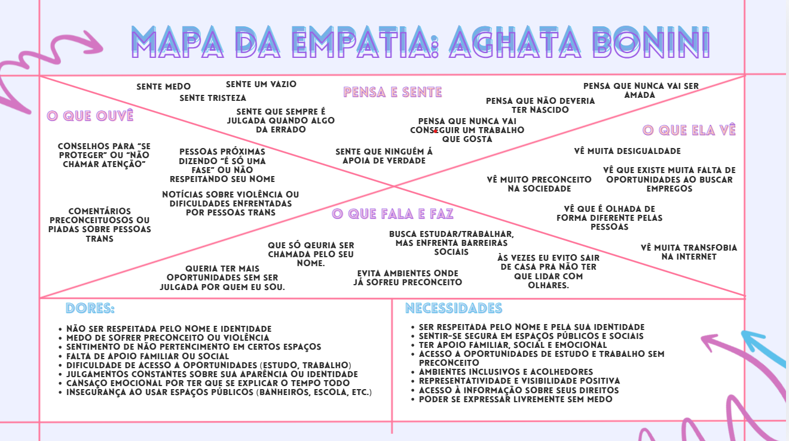

Conectando histórias, promovendo respeito e dando visibilidade à comunidade trans.
Saiba maisO TransLaço é um projeto desenvolvido para dar visibilidade à realidade de pessoas trans e travestis, destacando seus desafios, vivências e a importância da inclusão social.
Inicialmente, realizamos a formação dos grupos para definir um tema relevante. Discutimos assuntos atuais relacionados à desigualdade, discriminação e causas LGBTQIAPN+.
Durante as pesquisas, percebemos que pessoas trans e travestis enfrentam diversas dificuldades na sociedade, o que motivou o desenvolvimento deste projeto.
Desenvolver um site acessível voltado à promoção de cursos profissionalizantes, oportunidades de emprego inclusivas e à construção de um ambiente acolhedor, onde pessoas trans e travestis se sintam valorizadas e inseridas no mercado de trabalho formal.
Desenvolver uma plataforma digital acessível e informativa, voltada à promoção da inclusão de pessoas trans e travestis no mercado de trabalho formal, por meio da oferta de conteúdos educativos, apoio, cursos profissionalizantes e divulgação de vagas de emprego inclusivas.
Identificamos que pessoas trans e travestis enfrentam diversos desafios na sociedade, como preconceito, falta de oportunidades e dificuldade de acesso a direitos básicos. A partir disso, decidimos aprofundar o tema para entender melhor essa realidade.
Utilizamos a técnica dos 5 porquês para entender a raiz do problema:
Desenvolvemos uma pesquisa para coletar opiniões e informações sobre o tema. Ao todo, obtivemos 36 respostas, que ajudaram a entender melhor a percepção das pessoas sobre a comunidade trans e os desafios enfrentados.
O mapa da empatia da persona Agatha Bonini foi desenvolvido de forma colaborativa pelo grupo como etapa inicial do projeto, com o objetivo de compreender, de maneira mais profunda, a realidade vivida por uma mulher trans negra em contexto social e profissional. A análise reúne aspectos como o que ela ouve, vê, pensa, sente, fala e faz, evidenciando experiências marcadas por desafios como preconceito, insegurança e falta de oportunidades, mas também por força, busca por respeito e desejo de crescimento.
Além disso, o mapa destaca suas principais dores, como a falta de reconhecimento e pertencimento, e suas necessidades, que envolvem segurança, inclusão, acesso a direitos e oportunidades. Esse processo foi fundamental para a construção de uma persona mais realista e alinhada com os objetivos do projeto, orientando o desenvolvimento de soluções mais empáticas e eficazes.

A maioria dos participantes reconhece que ainda existe muito preconceito e falta de informação. Isso reforça a importância de projetos como o TransLaço, que buscam conscientizar e promover a inclusão.